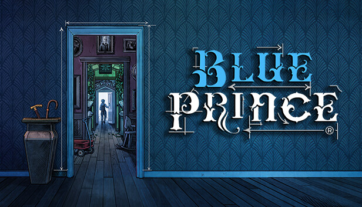

Acompanhe os principais reviews feitos por nós!
REVIEWS
 XP 3,5
XP 3,5
Review: Monster Hunter Wilds eleva a ação e o combate, tudo que os fãs gostam! É pau nos
monstros!
O game conseguiu trazer mais do que os fãs gostam, aumentaram as variadedes de
chefes e
criaram visuais incríveis de monstros, armaduras e cenários.
 XP 4,9
XP 4,9
Review: Clair Obscure Expedition 3 se tornou a maior e melhor surpresa do ano, um RPG de turno
impecável que abalou o mundo dos games!
Desenvolvido por uma equipe de pouco mais de 30
desenvolvedores. O jogo trás visuais impressionantes e uma jogabilidade viciante! O game esta
disponível no Xbox Game Pass.
 XP 4
XP 4
Review: Kingdom Come: Deliverance II estoura a bolha e surpreende com os níveis de detalhe e
jogabilidade.
Apesar de ser um jogo nichado, conseguiu aumentar consideravelmente sua base
de
fãs com essa sequência, trazendo muito realismo e imersão.
 XP 4
XP 4
Review: Doom The Dark Ages simplifica a fórmula e diverte horrores. Seguindo o sucesso de seus antecerrores, o game apresenta um gameplay diferenciado e uma fase íncrivel inspirado em "Lovecraft"
 XP 3
XP 3
Review: R.E.P.O trás uma experiência divertida e engraçada, perfeito para jogar com os amigos. Seguindo o sucesso de Lethal Company, R.E.P.O é uma experiência engraçada ou aterrorizante a depender do seu ponto de visto.

XP 4,5